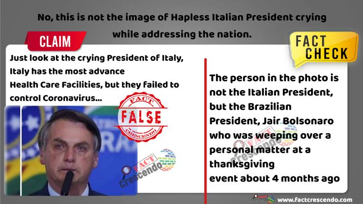
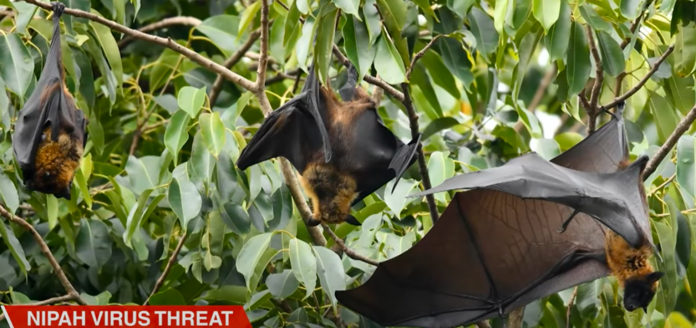
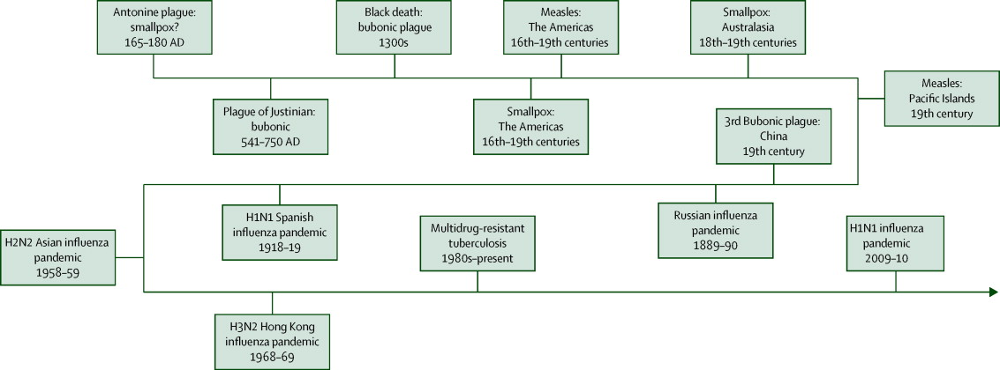
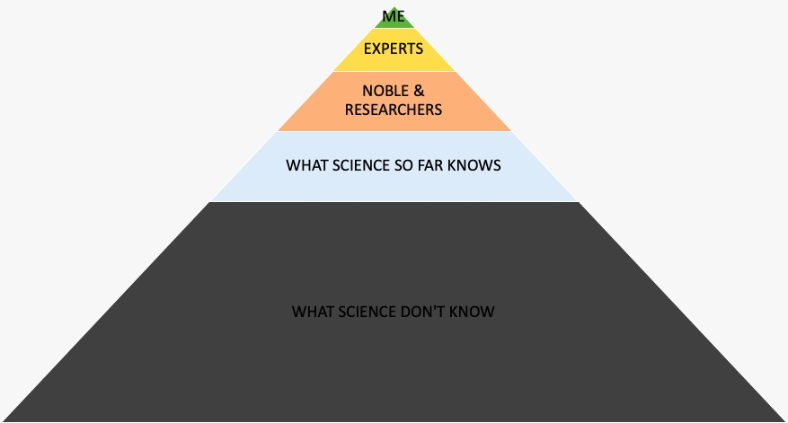
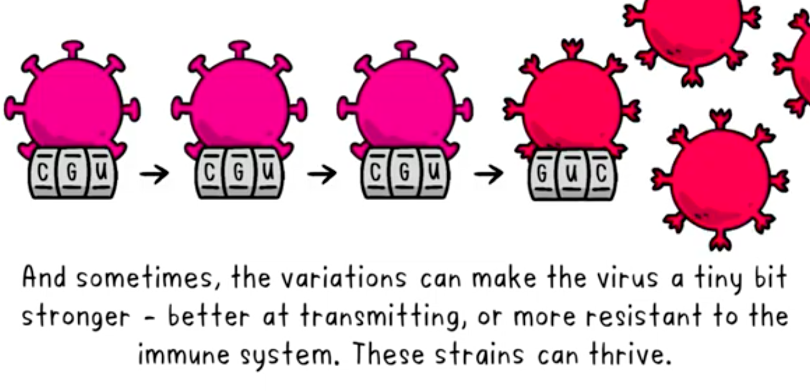
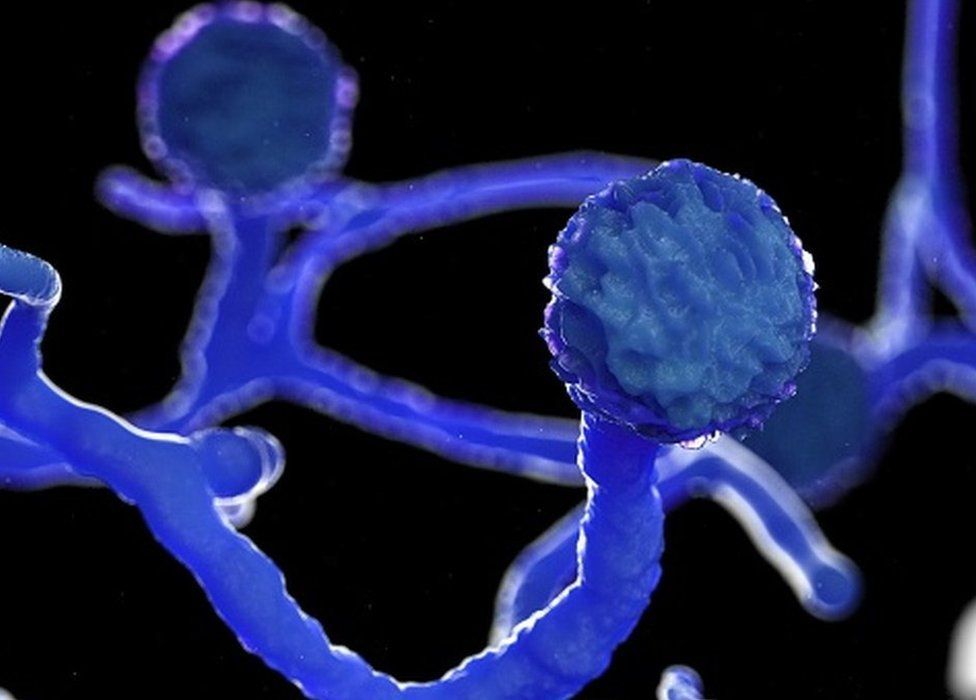

COVID-19 Chronicles
Written as the pandemic unfolded: facts and fear, lockdowns and recession, the second wave — and what it taught us.
Series · Completed
COVID-19 Chronicles
Written as the pandemic unfolded: facts and fear, lockdowns and recession, the second wave — and what it taught us.
COVID 19 : FACTS & REALITY CHECK
Facts and a reality check on COVID-19 in March 2020: what we knew and what we didn't.
COVID-19 & NETIZENS REACTIONS
How netizens reacted to COVID-19, checked against the WHO myth busters. Co-authored with Dr. Mahesh Kolli.

COVID 19: LESSONS FROM 'IN' LAND
Lessons for India from the South Korean model and its use of analytics to contain COVID-19 during the lockdown.

COVID 19 : MEDICAL SCIENCE TO OVERCOME PANDEMIC
How medical science can help overcome the COVID-19 pandemic: the best learnings, summarised in a consumable way.

COVID 19: DEATHS , LOCK DOWN & RECESSION
Deaths, lockdowns and recession: an opinion on the trade-offs India faced during COVID-19.

COVID 19: FEAR, STRESS & SUICIDE
Fear, stress and suicide during the COVID-19 lockdown: my view on the news from India.
COVID 19 : TREND, FORECAST & WHEN IT ENDS!!!!
COVID-19 trend and forecast for India: a personal epidemic-forecasting project on when the pandemic might end.

COVID 19: THE CONCLUSION
The conclusion: my summary of 100 days of reading and learning about COVID-19.

COVID 19: REVISITED WITH A NEW STRAIN
COVID-19 revisited with a new strain: the second wave in India and what everyone should know.

COVID 19 : STEROIDS , DRUGS & DEATHS
Steroids, drugs and deaths during India's second COVID-19 wave.

No matching items